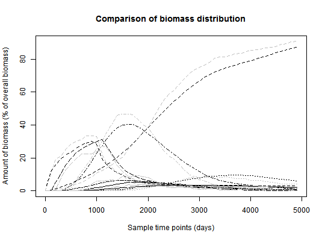

Estimate a 'movement kernel' describing the movement of biomass.
A movement kernel is meant to summarise the movement of biomass
across polygon-shaped areas in the ocean. It is estimated using a 4-th order
Runge-Kutta particle tracking algorithm, which records the moves of passive
numerical drifters from polygon to polygon.
particle.tracking(arena, num_particles, no_move_window = 1000, end_t_counter = NULL, t_step = NULL, diffusion = 0, no_age_classes = "FD", min_nac = 100, max_nac = 500, delta = NULL, graphics = FALSE, log = FALSE, from_boundary = TRUE)
Arguments
| arena | An object of class |
|---|---|
| num_particles | The number of particles used for the estimation. |
| no_move_window | Number of time steps in which no move between polygons has to occur in order for the particle tracking to stop. Use 0 to disable. |
| end_t_counter | The maximal number of time steps used in the Runge-Kutta scheme. Has to be specified if log==TRUE. |
| t_step | The time step used in the Runge-Kutta scheme. See details for the default value. |
| diffusion | A diffusion coefficient, see details. |
| no_age_classes | The number of age classes used in the |
| min_nac | The minimum number of age classes. |
| max_nac | The maximum number of age classes. |
| delta | The width of an age class used in the movement kernel, chosen automatically if NULL. |
| graphics | If TRUE, the remaining particles at the end of the Runge-Kutta simulation are shown. |
| log | If TRUE, the path of the particles is saved to a global variable 'log' and displayed if graphics==TRUE. Only use for a small number of particles! |
| from_boundary | If TRUE, particles are inserted from the boundary, otherwise they are uniformly distributed over the domain. This might be advantageous for plotting purposes if log=TRUE. |
Value
An object of class movement\_kernel, which is a list of the
following items:
A list of the movement tensors for each polygon,
where P[[poly]][i,j,k] describes the probability of a particle
leaving polygon poly towards polygon j in the case that it
entered from polygon i and is in age class k.
A
list containing the neighbours for each polygon. This is used to translate
between the local neighbourhood numbers (used in P) to the global
numbers of the polygons.
The number of age classes used in the movement kernel.
Width of the age classes used in the movement kernel.
Details
The two main bits of work in this function, the Runge-Kutta simulation and
the estimation of the movement\_ kernel, have been implemented in the
C dlls particle\_tracking and estimate\_P. Even so, the
runtime of this function can be quite high when using large numbers of
particles and/or a large domain. It is important to note that in the present
form, particles can get caught in 'voids' in the flow field, i.e. in places
where their velocity is 0. If this happens for too many particles the
estimation should be repeated with a higher values of diffusion. A warnings
message is given at the end of the simulation, indicating the number of
particles left in the domain.
There is considerable space for improvement in replacing the fixed time step Runge-Kutta scheme with a more sophisticated numerical integrator. However, this requires some fiddling with the underlying C functions and has not been tried yet.
An arena object describes the arena in which the function is to be
used. It is a list containing elements lat, lon, U,
V and S (in that order), where lat and lon are
vectors storing the latitude and longitude values of the grid points used,
U and V are matrices with the corresponding flow velocities in
west-east and south-north direction, and S is a matrix in which each
grid points has an integer number, either giving the polygon it belongs to
(if > 0) or stating that this grid point lies on land (if == 0).
The default values for the time step in the Runge-Kutta scheme is choosen in such a way that a particle will on average move for 1/10 of the distance between two grid points in each time step. Although a variable time step would be preferable, this yields an accurate estimation in most cases.
Diffusion is included by adding the product of a normal random number and the mean velocity in the either direction to the calculated velocity in that direction. The diffusion coefficient gives the standard variation of the normal random number. Diffusion is needed to get particles out of 'voids', i.e. places in the flow field where the adjacent velocities cancel out and the particles get stuck. It is also physically justifiable as the flow field itself characterises advective motion only.
The main loss of precision in the replication and prediction of movement
stems from the management of time, which is realised as a system of 'age
classes' in the movement kernel. A particle entering a polygon is in age
class 1 and then moves up through the age classes. Each age class has
different probabilities of movement attached to it, so that the movement of
a biomass depends on the time since it entered its current polygon. Since
the choice of the number of age classes and their width delta can
have a profound effect, the user can choose whether to trust one of the
built-in methods (Sturges, FD, scott) which are usually
used to choose the number of classes in a histogram, or specificy his or her
own number of age classes. The default uses the Freedman-Diaconis rule
(FD), which usually produces the highest number of age-classes and
therefore the best precision. Unless the performance of the function
biomass\_tracking is totally unsatisfactory due to the high number of
age-classes, less age-classes should not be used, as the loss of precision
can be quite severe.
References
TODO: my report
See also
biomass.tracking,
particle.tracking.compare, biomass.compare,
prepare.arena
Examples
# Use more particles if realistic results are needed mk = particle.tracking(arena,400,5000,diffusion=0.6,graphics=TRUE)# Now estimate the biomass movement N1 = biomass.tracking(mk,seq(0,4900,by=100),infl_poly=2) # Get a particle tracking result to compare the above to N2 = particle.tracking.compare(arena,400,100,50,diffusion=0.6,infl_poly=2)#> Warning: Particles left in domain after the time for particle tracking elapsed:#> Warning: 33#> [1] 49.627705 2.090415